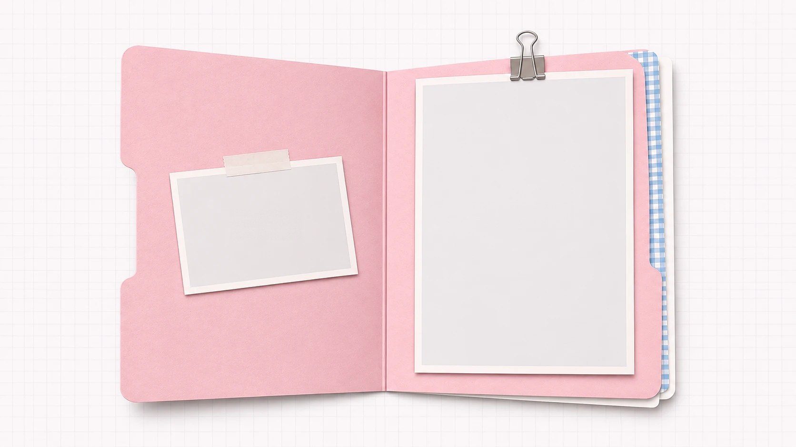
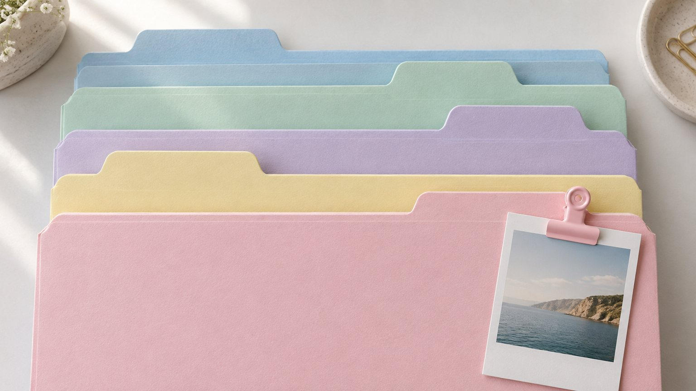

crftd-valentines-front.jpg
tee on a model, front
1200 × 1500
tee on a model, front
1200 × 1500
crftd-valentines-back.jpg
back or flat lay
1200 × 1500
back or flat lay
1200 × 1500
Style tile v5. Your cover is the first page. Scroll to open the file.

Scroll to open the file

Co-founder and director of CRFTD, formerly Roots. A purpose-driven apparel label selling to shoppers and to schools, printed with artwork by children and supporting welfare initiatives. I owned product design, social media, logistics and fulfilment.
The brief. Build an apparel brand from zero that sells, with children's art at its heart.
My role. Co-founder and director. Product design, social media, logistics and fulfilment.
What I made. Three themed drops for Valentine's, Earth Day and IPL, with 8 tees designed by me and 4 by children. Plus DIY T-shirt print kits as a co-creative product.
Result. Rebranded from Roots to CRFTD, then moved into selling to schools across Kolkata.